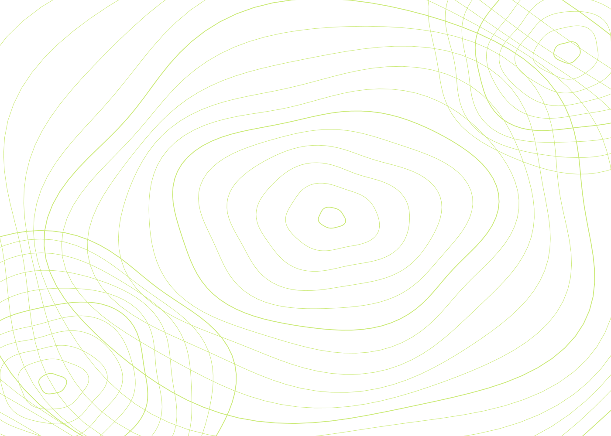
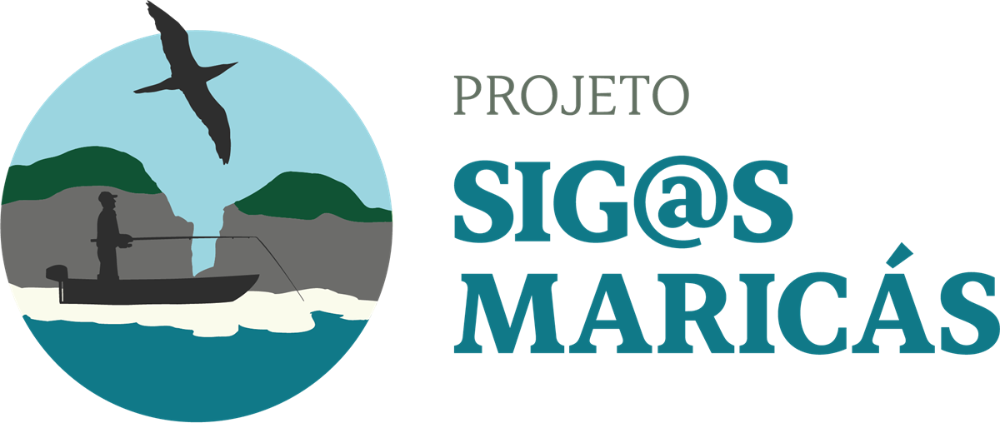
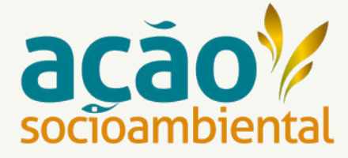
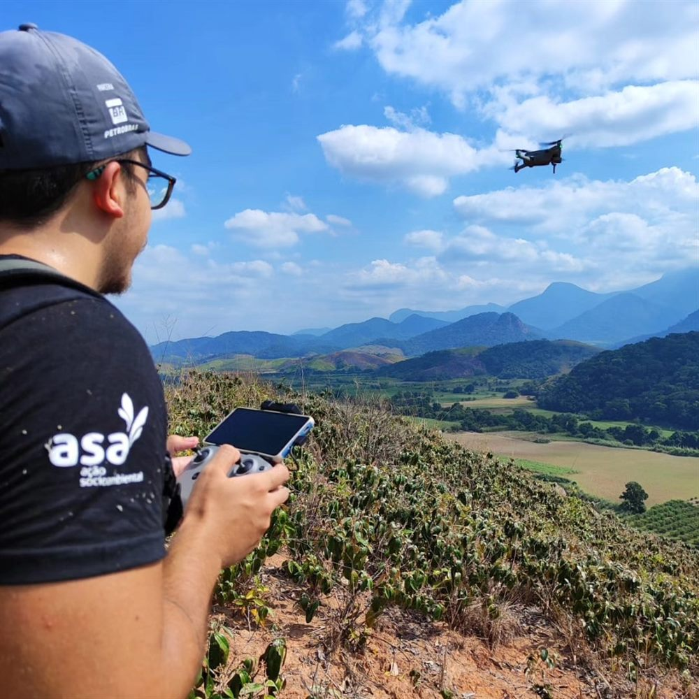
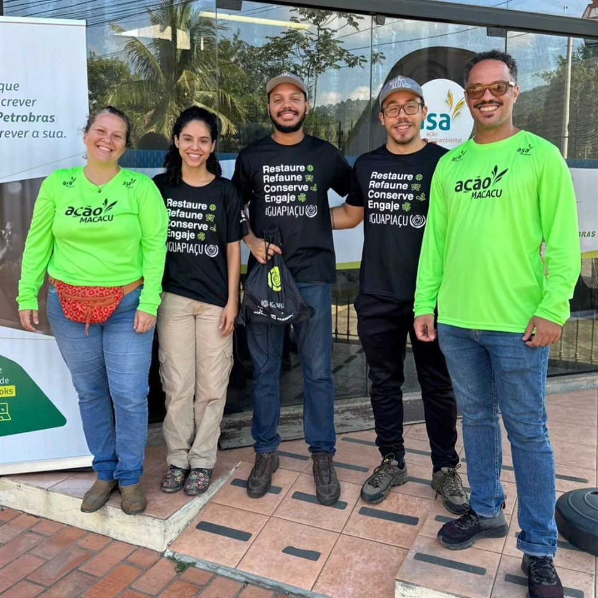
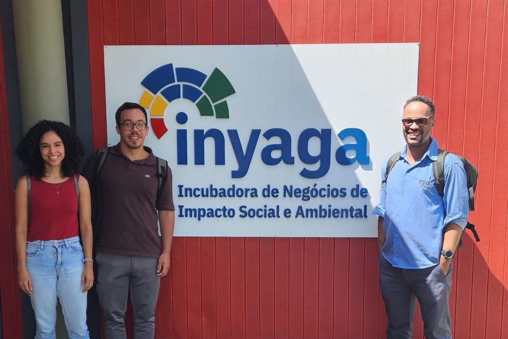

01
Aerolevantamento com drones
Aerofotogrametria para ortomosaicos, modelos digitais de elevação e de terreno e nuvens de pontos para volumetria.

Geotecnologia aplicada ao território
Aerolevantamento com drones, cartografia, banco de dados e WebGIS em uma entrega única, para projetos ambientais e territoriais que precisam de precisão.
Contato
Conte o básico. Retornamos com o caminho técnico para o seu projeto.
O diagnóstico
Em projetos ambientais e territoriais, a informação costuma estar espalhada em arquivos, planilhas e relatórios que não se conversam. A Gaia organiza essa base e transforma o dado em produto de trabalho.
Camadas, planilhas e documentos em pastas diferentes, sem padrão de nomes ou de projeção.
Cada relatório exige remontar mapas e conferir números que já deveriam estar consolidados.
O dado técnico fica com uma pessoa só e não chega a quem precisa tomar a decisão.
Novos voos e levantamentos entram no projeto sem histórico nem controle de versão.
Serviços
Cinco frentes que se conectam. Você pode contratar uma delas ou o pacote completo, do voo à publicação.
Aerofotogrametria para ortomosaicos, modelos digitais de elevação e de terreno e nuvens de pontos para volumetria.
Organização dos insumos, definição de temas e layouts, confecção das peças cartográficas e entrega digital para relatórios e documentos do projeto.
Estruturação de plataforma para publicar camadas vetoriais com organização, padronização, navegação e consulta por usuários autorizados.
Relatórios de acompanhamento periódico, em conformidade com os relatórios oficiais já produzidos no âmbito do projeto.
Organização, padronização e atualização de bases vetoriais e alfanuméricas, com consistência, integridade e rastreabilidade.
Nossa premissa
WebGIS
Organizamos as camadas, padronizamos a legenda e publicamos em uma interface que funciona no navegador, sem instalar nada.
Portfólio WebGIS da Gaia. Navegue pelas abas para explorar os modelos de mapa. Os dados são de exemplo. Se a plataforma não carregar, abra em nova aba. O carregamento inicial pode levar alguns instantes.
Projetos atendidos
Projetos socioambientais que unem conservação, educação e gestão do território.
Projeto socioambiental · Maricá, RJ

Sistema de informação colaborativo para o levantamento da biodiversidade e da geologia das Ilhas Maricás, com ações de educação ambiental e desenvolvimento local.
Visitar siteConservação e restauração · RJ

Atuação em conservação da Mata Atlântica, restauração florestal e educação ambiental na bacia do Guapi-Macacu, com monitoramento de áreas e dados ambientais.
Visitar siteA Gaia em campo
Voos, campo e parcerias que dão origem às bases e aos produtos que entregamos.



Equipe
A equipe da Gaia reúne engenheiros ambientais e desenvolvedores. Do levantamento em campo à publicação das aplicações, o time conecta o território à tecnologia que o projeto usa.
Fazemos parte da Inyaga
Incubadora de Negócios de Impacto Social e Ambiental da UFRJ.
Próximo passo
Conte o contexto, as bases que já existem e o que precisa ser entregue. Retornamos com o caminho técnico e os próximos passos.